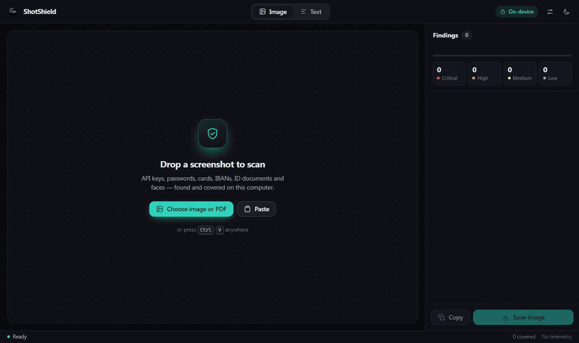
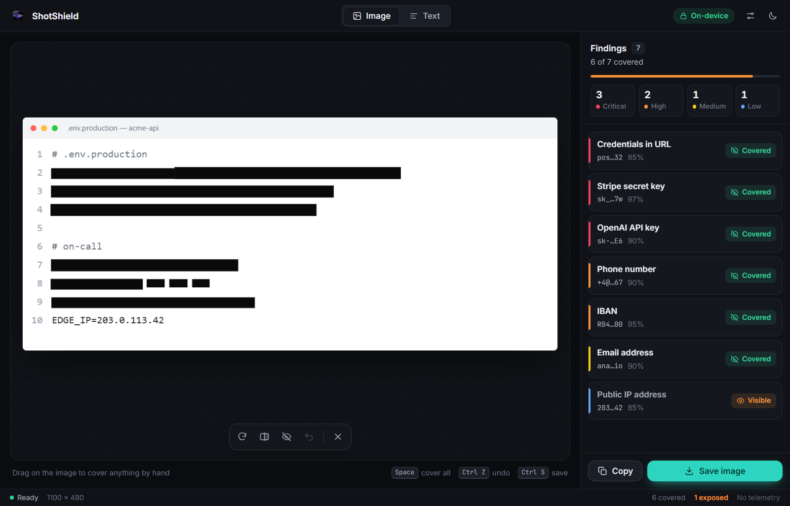

Keys and passwords
Tokens from AWS, GitHub, Stripe, OpenAI, Anthropic, Slack and a dozen more, private keys, JWTs, database URLs with a login baked in, and anything named *_PASSWORD.
ShotShield reads your screenshots and PDFs, finds the API keys, passwords, cards, IBANs, ID numbers and faces, and covers them before you paste the image anywhere.
Windows · macOS · Linux · free updates built in

What it catches
Most matchers lean on a checksum or a printed label, so random numbers stay uncovered. Reading the image is plain OCR, tuned for the slips it makes on code fonts and phone photos.
Tokens from AWS, GitHub, Stripe, OpenAI, Anthropic, Slack and a dozen more, private keys, JWTs, database URLs with a login baked in, and anything named *_PASSWORD.
Payment cards checked with Luhn, IBANs checked with mod-97, SWIFT codes, CVVs next to their label, Bitcoin and Ethereum wallets.
Romanian CNP and ID cards, passports and driving licences, the MRZ strip, names behind a label, addresses, plates, emails, phone numbers and faces.
Statements and contracts open page by page. Digital PDFs are read from their own text, instantly. The saved copy is flattened, so the hidden text layer can't leak.
On Windows, Ctrl Alt R from any app grabs part of the screen, covers it and can put it straight on your clipboard.
Never cover your own work email or *@yourcompany.com. Always cover a project code name or an internal ID format. Right-click a finding to add it.
Privacy

How it works
Drag in images or a PDF, press Ctrl V, or capture part of the screen. A whole batch scans in parallel.
Findings are listed worst first. Click one to uncover it, or drag a box over anything the scan missed.
Save the redacted image or PDF, or copy it straight into the chat you were about to paste into.
Free to download for Windows, macOS and Linux.